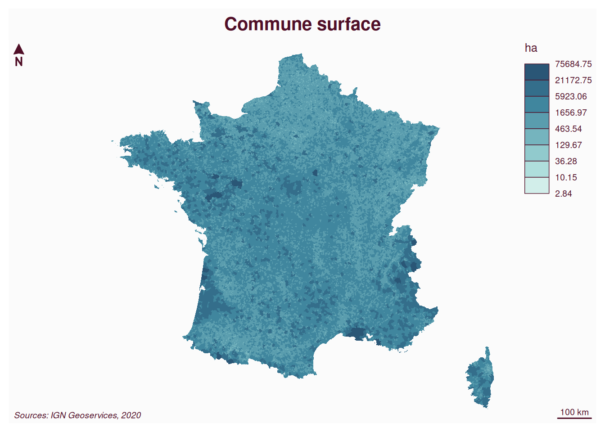
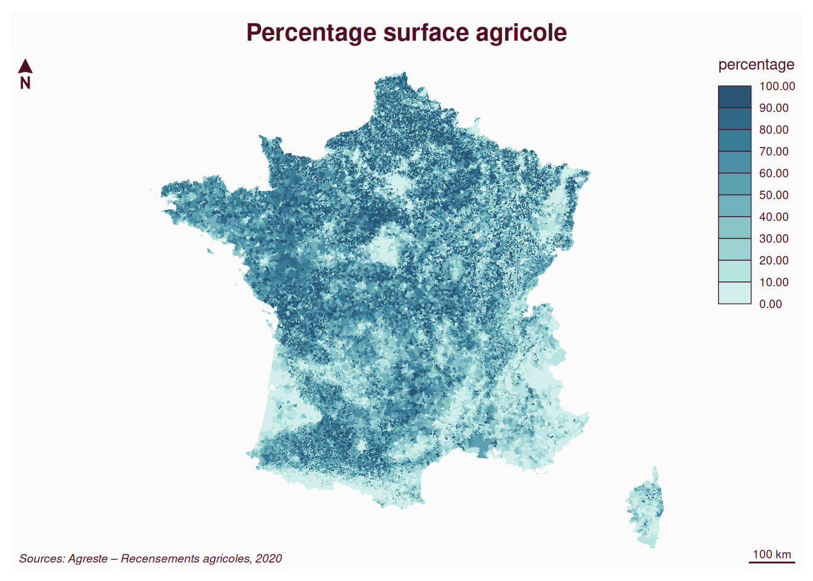
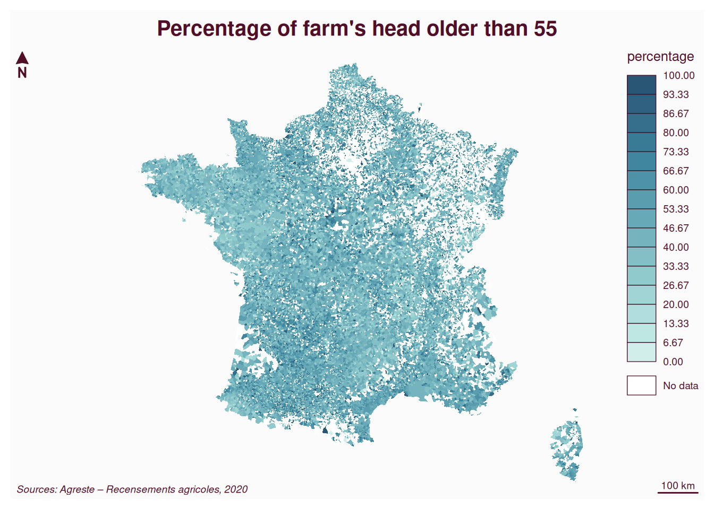
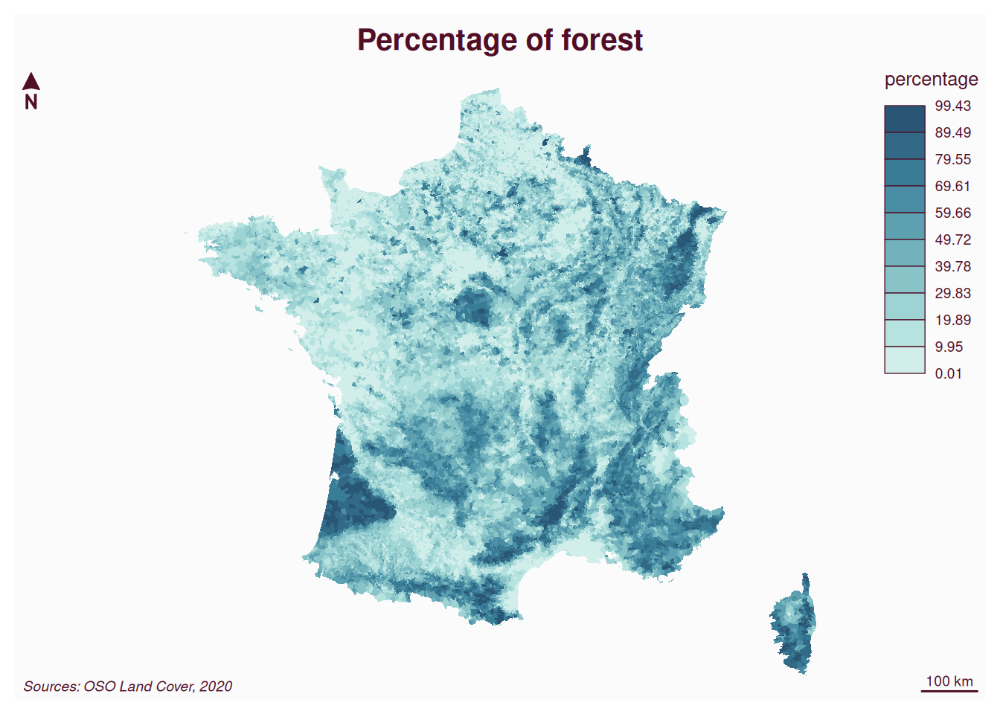
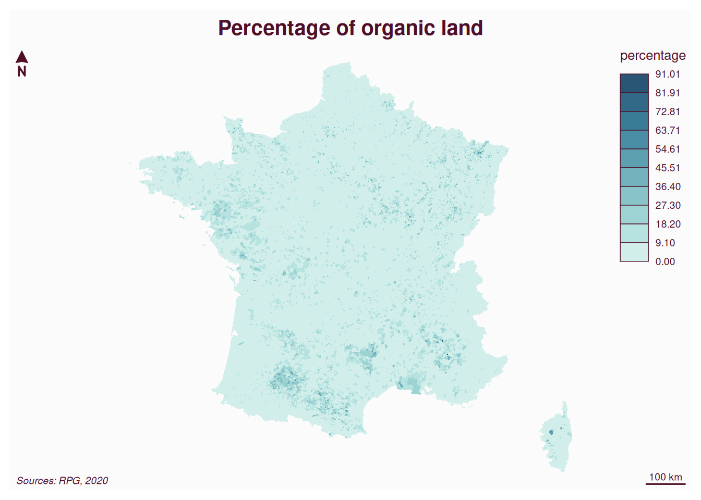
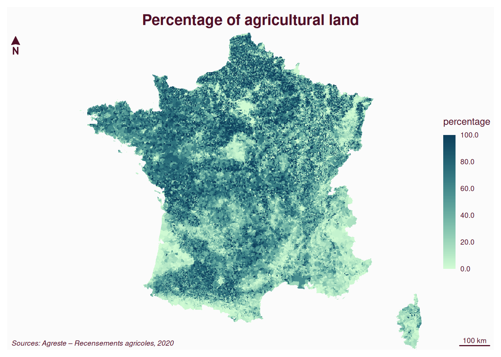

# make sure needed packages are installed
pak <- c("sf", "terra", "mapsf", "here", "archive", "lwgeom", "exactextractr")
if (!requireNamespace(pak, quietly = TRUE)) {
install.packages(pak)
}
# load packages
library(sf) |> suppressPackageStartupMessages()
sf_use_s2(FALSE) |> suppressMessages()
# with sf_use_s2(FALSE), sf uses lwgeom package for st_area
library(terra) |> suppressPackageStartupMessages()
library(mapsf)
library(here) |> suppressPackageStartupMessages()
library(archive)
library(exactextractr)
# On Rossinante, we need to install libarchive
# * deb: libarchive-dev (Debian, Ubuntu, etc)Tutorial on describing French municipalities
Aim
The goal is to explore the steps of data processing that are needed to get information on French agricultural landscape using freely available data and R.
The communes (=town, municipality) in 2020 are used as the scale and backbone of our analysis.
0. Setting-up
Install and load packages
For this workflow, we need a few packages. Let’s load them (and install them if needed).
Download data
Four datasets are needed to run the following analysis. You can download them one by one by hand and move them to the data/ folder. Or you can run the code below to do this step automatically (total size: >2Gb).
Code
# set data directory
datadir <- here::here("data")
if (!dir.exists(datadir)) {
dir.create(
path = datadir,
showWarnings = FALSE,
recursive = TRUE
)
}
options(timeout = 1500)
# download commune data
file1 <- "ADMIN-EXPRESS-COG_2-1_2020-11-20_COMMUNE."
url1 <- "https://data.geopf.fr/telechargement/download/ADMIN-EXPRESS-COG/ADMIN-EXPRESS-COG_2-1__SHP__FRA_2020-11-20/ADMIN-EXPRESS-COG_2-1__SHP__FRA_2020-11-20.7z"
dirshp <- "ADMIN-EXPRESS-COG_2-1__SHP__FRA_2020-11-20/ADMIN-EXPRESS-COG/1_DONNEES_LIVRAISON_2020-11-20/ADE-COG_2-1_SHP_WGS84G_FRA/COMMUNE."
shpext <- c("cpg", "dbf", "prj", "shp", "shx")
if (!file.exists(here::here(datadir, paste0(file1, shpext[1])))) {
# download archive
temp <- file.path(datadir, "temp.7z")
download.file(url1, temp, mode = "wb")
# extract only the COMMUNE.shp
archive::archive_extract(temp, dir = datadir, files = paste0(dirshp, shpext))
# copy and rename
file.copy(
from = file.path(datadir, paste0(dirshp, shpext)),
to = file.path(datadir, paste0(file1, shpext))
)
# remove temporary files
file.remove(file.path(datadir, paste0(dirshp, shpext)))
file.remove(temp)
# remove temporary repository
unlink(
file.path(datadir, "ADMIN-EXPRESS-COG_2-1__SHP__FRA_2020-11-20"),
recursive = TRUE
)
}
# download agreste dataset (not needed if repository cloned)
file2 <- "data_Agreste_Commune.csv"
url2 <- "https://github.com/rfrelat/frenchmap/raw/refs/heads/main/data/data_Agreste_Commune.csv"
if (!file.exists(file.path(datadir, file2))) {
temp <- file.path(datadir, file2)
download.file(url2, temp, mode = "wb")
}
# download bio parcelles RPG data
file3 <- "rpg-bio-2020-national.shp"
url3 <- "https://www.data.gouv.fr/api/1/datasets/r/6428e701-1229-43b7-aaf7-16bbed2ea507"
if (!file.exists(file.path(datadir, file3))) {
temp <- file.path(datadir, "rpg-bio-2020-national.zip")
download.file(url3, temp, mode = "wb")
unzip(temp, exdir = datadir)
file.remove(temp)
}
# download OSO land cover plus
file4 <- "Classif_Seed_0_2020.tif"
url4 <- "https://zenodo.org/records/6538861/files/Classif_Seed_0_2020.tif?download=1"
if (!file.exists(file.path(datadir, file4))) {
temp <- file.path(datadir, file4)
download.file(url4, temp, mode = "wb")
}1. Load Admin Express commune
The spatial definition of commune comes from IGN Geoservices. We will use the shapefile for the year 2020: ADMIN-EXPRESS-COG_2-1_2020-11-20_COMMUNE.shp.
After download and extraction of the archive, load the data in R:
# load shapefile
commune <- st_read("data/ADMIN-EXPRESS-COG_2-1_2020-11-20_COMMUNE.shp")
# remove DOM-TOM
commune <- commune[!commune$INSEE_DEP %in% 971:976, ]
# for mapping and extraction, we project the shapefile to Lambert 93 (EPSG:2154)
commune_L93 <- st_transform(commune, crs = 2154)
# calculate area in ha
commune_L93$area_ha <- as.numeric(st_area(commune_L93)) * 0.0001Visualization
Code
# visualize the area of communes
mf_map(
x = commune_L93,
var = "area_ha",
type = "choro",
breaks = "geom",
nbreaks = 8,
pal = "Teal",
border = NA,
leg_title = "ha",
)
# layout elements
mf_title("Commune surface")
mf_credits("Sources: IGN Geoservices, 2020")
mf_arrow()
mf_scale()
2. Extract information from CSV
As an example, we will use data from Agreste downloaded at the commune level for 2020.
agreste <- read.table(
"data/data_Agreste_Commune.csv",
skip = 2,
sep = ";",
quote = "\"",
header = TRUE,
na.strings = "N/A",
encoding = "utf8"
)Then we need to get the values of interest for each commune. Agreste data provide one row per commune, so we don’t need to further pre-process this file.
# match the INSEE CODE
m0 <- match(commune_L93$INSEE_COM, agreste$Code)
# table(is.na(m0))
# SAU : superficie agricole utilisée, in ha
commune_L93$SAU_ha <- agreste$SAU.en.2020[m0]
# calculate percentage of agricultural land
# but some SAU are bigger than commune area
# need to be checked further ...
commune_L93$pct_SAU <- ifelse(
commune_L93$area_ha < commune_L93$SAU_h,
100,
commune_L93$SAU_ha / commune_L93$area_ha * 100
)
summary(commune_L93$pct_SAU)
# Percentage of farmers older than 55
var <- "Part.des.chefs.d.exploitation.et.coexploitants.de.55.ans.ou.plus..2020"
commune_L93$pct_55p <- agreste[m0, var]
summary(commune_L93$pct_55p)Visualization
Code
# visualize the Percentage of cultivated area
mf_map(
x = commune_L93,
var = "pct_SAU",
type = "choro",
breaks = "equal",
nbreaks = 10,
pal = "Teal",
border = NA,
leg_title = "percentage",
)
# layout elements
mf_title("Percentage surface agricole")
mf_credits("Sources: Agreste – Recensements agricoles, 2020")
mf_arrow()
mf_scale()
Code
# visualize the percentage of head farmer of 55+
mf_map(
x = commune_L93,
var = "pct_55p",
type = "choro",
breaks = "equal",
pal = "Teal",
border = NA,
leg_title = "percentage",
)
# layout elements
mf_title("Percentage of farm's head older than 55")
mf_credits("Sources: Agreste – Recensements agricoles, 2020")
mf_arrow()
mf_scale()
3. Extract information from RASTER
As an example, we use the land cover information as gridded dataset. Let’s estimate the proportion of forest per commune. The data comes from OSO land cover. Specifically, we use the geotiff file Classif_Seed_0_2020.tif.
First, we need to load and reclassify the forest pixels.
# reclassify forest cover with 0 and 1
# it takes a long time to reclassify the raster
# so only if not already available
file5 <- "OSO_forest.tif"
if (!file.exists(file.path(datadir, file5))) {
oso <- rast(file.path(datadir, file4))
# reclassification matrix
# forest are classes 16 and 17
matc <- matrix(
c(0, 15.5, 0, 15.5, 17.5, 1, 17.5, 23, 0),
ncol = 3,
byrow = TRUE
)
# classify OSO land cover per forest
forest <- classify(
oso,
matc,
include.lowest = TRUE,
filename = file.path(datadir, file5)
)
# might be faster (to be tested)
# forest <- clamp(oso, lower = 16, upper = 17, values = TRUE)
# forest[!is.na(forest)] <- 1
# forest[is.na(forest)] <- 0
} else {
forest <- rast(file.path(datadir, file5))
}Then we can extract zonal statistics for each commune (it takes a long time to run).
# much faster (but still takes long time)
zonal_forest = exact_extract(forest, commune_L93, fun = "mean")
# save the percentage of forest in the vector object
commune_L93$pct_forest <- zonal_forest * 100
# exactextractr is faster than terra::zonal
# commune_terra <- vect(commune_L93)
# zonal_forest <- zonal(forest, commune_terra, fun = mean, weights = TRUE)Visualization
Code
# visualize the agricultural income per hectare
mf_map(
x = commune_L93,
var = "pct_forest",
type = "choro",
breaks = "equal",
nbreaks = 10,
pal = "Teal",
border = NA,
leg_title = "percentage",
)
# layout elements
mf_title("Percentage of forest")
mf_credits("Sources: OSO Land Cover, 2020")
mf_arrow()
mf_scale()
4. Extract information from POLYGONS
Let’s now estimate the proportion of parcels certified as organic farming. The data comes from Parcelles en Agriculture Biologique (AB) déclarées à la PAC. Specifically, we use the shapefile rpg-bio-2020-national.shp.
bio <- st_read("data/rpg-bio-2020-national.shp")
# Extract overlapping areas (takes some time <2min)
overlaps <- st_intersection(commune_L93, bio)
# dim(overlaps) # 993116
# dim(bio) # 931387
# Calculate area of overlaps
overlaps$area_ha <- as.numeric(st_area(overlaps)) * 0.0001
# summarize the area of organic farming per commune
bio_ha_commune <- tapply(
overlaps$area_ha,
overlaps$INSEE_COM,
sum,
na.rm = TRUE
)
# save the information in the shapefile
# match with the shapefile
m0 <- match(commune_L93$INSEE_COM, names(bio_ha_commune))
commune_L93$bio_ha <- bio_ha_commune[m0]
# NA means no organic fiels
commune_L93$bio_ha[is.na(commune_L93$bio_ha)] <- 0
# calculate the percentage of bio
commune_L93$bio_pct <- commune_L93$bio_ha / commune_L93$area_ha * 100
summary(commune_L93$bio_pct)Visualization
Code
# visualize the agricultural income per hectare
mf_map(
x = commune_L93,
var = "pct_bio",
type = "choro",
breaks = "equal",
nbreaks = 10,
pal = "Teal",
border = NA,
leg_title = "percentage",
)
# layout elements
mf_title("Percentage of organic land")
mf_credits("Sources: RPG, 2020")
mf_arrow()
mf_scale()
5. Export indicators
As vector
# not sure why, but variables are renamed incoherently
# it helps to transform '_' by '.'
names(commune_L93) <- gsub("_", ".", names(commune_L93))
# export as shapefile
st_write(
commune_L93,
dsn = file.path(datadir, "Communes_Indicators.shp"),
append = FALSE
)As raster
# transform to raster with terra
# need to transform sf object to terra::vect()
commune_terra <- vect(commune_L93)
# create a grid with 1km resolution
grid1k <- rast(commune_terra, res = 1000)
# rasterize
psau <- terra::rasterize(
commune_terra,
grid1k,
field = "pct_SAU",
filename = file.path(datadir, "Communes_1km_pctSAU.tif"),
overwrite = TRUE
)
# with stars, not sure how to set the resolution
# pct_sau <- stars::st_rasterize(
# commune_L93["pct_SAU"],
# file = file.path(datadir, "Communes_2020_pctSAU.tif"),
# driver = "GTiff"
# )Visualization
Code
# visualize the agricultural income per hectare
mf_raster(psau, leg_title = "percentage")
# layout elements
mf_title("Percentage of agricultural land")
mf_credits("Sources: Agreste – Recensements agricoles, 2020")
mf_arrow()
mf_scale()